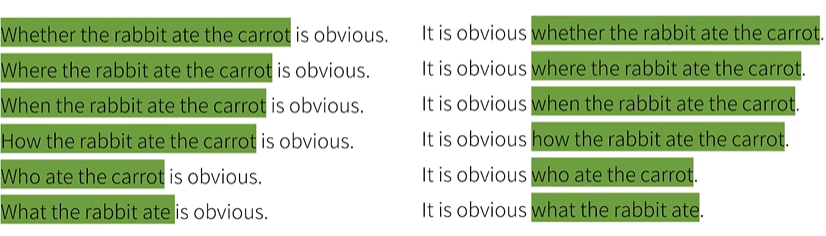
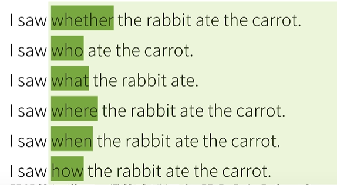

英语
一、基本知识
五大基本句型
简单句(simple sentences)
----------什么（主） 怎么样（谓）
- 无承受者:
# 主语+(不及物)动词
Papa Rabbit sleeps.
- 一个动作承受者:
# 主语+(单及物)动词+宾语
Papa Rabbit likes you.
- 两个动作承受者:
# 主语+(双及物)动词+间接宾语+直接宾语
Papa Rabbit teachers you English.
- 一个动作承受者(不同于2):
# 主语+(复杂及物)动词+宾语+(宾语)补语
Papa Rabbit considers you smart.
- 赋予信息(不是个"动作"):
# 主语+(系)动词+(主语)补语[表语]
Papa Rabbit is tall.
句子成分
1. 主语 subject
2. 谓语动词(~谓语) predicate verb
3. 宾语 object
4. 宾语补语 object complement
5. 主语补语 subject complement
6. 定语(修饰主语或宾语) attributive
7. 状语(修饰谓语动词) adverbial
8. 同位语 apprositive
复合句(compound sentence) ----两个句子之间是并列关系
复杂句(complex sentence) ----一个句子充当另一个句子的句子成分
词类
1. 名词
2. 冠词
3. 代词
4. 形容词
5. 数词
6. 副词
7. 介词
8. 叹词
9. 连词
10. 动词
- 注：
句子成分和句子词类是完全不同的概念。句子里的每一种成分，除了谓语动词必须是动词之外，
其他都有可能包含不同的词类。
动词除了可以充当谓语动词之外，还可以充当主语，宾语，宾语补语，主语补语，定语等
只是需要将谓语动词修改下，变成非谓语动词。不仅如此，非谓语动词可以几乎取代所以的从句，
简化句子。


谓语动词具有中文中动词不具备的三大本领
谓语动词"三大本领"
1. 表示动作的时间 { 现在，过去，将来，过去将来 }
2. 表示动作的状态 { 一般，完成，进行，完成进行 }

3. 表示动作的假设，情感等
(注:)谓语动词很难单独完成上述效果，需要其他词提供帮助(助动词)
例如"吃(eat)"这个动作:

总结:
动词是英语中重要的部分，几乎可以串起所有的英语语法知识

二、英语时态
三、虚拟语气(两大用法)
1) 表"不可能"假设
# 和现在事实相反
If I saw the rabbit now, I would bite him.
# 和将来事实相反(或可能性很小的事)
If I should see the rabbit tomorrow, I would bite him.
# 和过去事实相反
If I had seen the rabbit a few days ago, I would have bitten him.
2) 表达愿望,请求,建议,命令等
- wish/would rather
# 对现在的愿望 wish + 动词过去式
I wish that I were a rabbit.
# 对过去的愿望 wish + had/would have + 动词过去分词
I wish (that) I had eaten the carrot.
# 对将来的愿望 wish + should/could/would... + 动词原形
I whish (that) I could eat the carrot.
- 还可以用 demand(要求)/suggest/insist(坚持)/order(命令) 而接的虚拟语气一律是 [should] + 动词原形
I demand/suggest/insist/order that you should give me a carrot.
3) 总结

四、从句
1) 形容词从句(定语从句)
- 形容词从句的思维方式
# 中文翻译为: 兔子在吃一根(我买来的)胡萝卜
The rabbit is eating a carrot that I bought.
# 在英语中,修饰的成分往往在名字的后面
# that 作为'that I bought'的引导词,起代词的作用,属于关系代词
- 关系代词
先行词是唯一的: that
先行词多选一: which
- 关系副词
关系副词 = 介词 + 关系代词
- 限定性和非限定性
# 限定性形容词从句
The rabbit ate the carrot which was on the table.
# 'which was on the table'限定carrot的范围/性质
言外之意是有很多胡萝卜,兔子吃的是其中一根
# 非限定性形容词从句
The rabbit ate the carrot, which was on the table.
# 可理解为下面句子:
The rabbit ate the carrot, the carrot was on the tabe.
# 这样的从句没有限定性,只是补充说明,往往用作句子的插入语
# 非限定形容词从句还可以指代整句话,如:
The rabbit ate the carrot, which was not surprising.
# 这里的'which'指的不是'rabbit',也不是'carrot',而是'rabbit ate the carrot'这件事
2) 主语从句
The fact is obvious.
# 扩写:
That the rabbit eat the carrot is obvious. # 头重脚轻
It is obvious that the rabbit eat the carrot. # it作形式主语
- 主语从句要有引导词(whether/where/when/how/who/what...) 
3) 宾语从句
I saw that the rabbit ate a carrot.
# 在口语或者非正式的书面语中,宾语从句的；引导词that往往可以省略
# 若表示否定,否定加在谓语动词前,而非从句中,如:
I don't thhink (that) the rabbit is smart.
# 主句时态 = 宾语从句时态

4) 表语(主语补语)从句
# be动词构成表语从句 （轻松地）<----> 主语从句
The problem is that the rabbit is hungry.
The reason is that there's no more carrot.
THe question is whether the rabbit is hungry.
The question is what the rabbit should eat.
The question is where/when/how the rabbit should eat the carrot.
It seems that the rabbit is humgry.
It feels that you're not telling the truth.
5) 同位语从句
My teacher, Papa Rabbit, likes carrots.
I like my teacher, Papa Rabbit.
# 常用于修饰抽象名词
The fact that the rabbit ate the carrot did not surprise me.
The question whether the rabbit will eat the carrot is on all our minds.
I have no idea who ate the carrot.
6) 宾语补语从句
# 需要宾语补语的动词: call,make,consider...
You can call me what you like.
My education made me who I am today.
7) 副词从句(状语从句)

1.时间
- 在某一时间点之前 before
Before the wolf stopped by, the rabbit ate a carrot at home.
- 在某一时间点之中(当时) when, while, as
# 我到家的时候, 兔子在吃胡萝卜
The rabbit was eating a carrot when I reaced home.
# 我做视频的过程中, 兔子在吃胡萝卜
The rabbit was eating a carrot while I was making a video.
# 我一边吃胡萝卜一边做视频
I ate a carrot as I made the video.
when: 时间点, 有突然之意
while: 时间段
as: 同时
- 在某一时间点之后 after
The rabbit ate a carrot after the wolf stopped by.
- 从之前某一时间点开始算 since 往往暗示对之后有影响
# 自从大灰狼来串门, 兔子已经分享了三根胡萝卜了
The rabbit has shared three carrots since the wolf stopped by.
- 直到之后某一时间点 until
# 兔子一直在等, 直到大灰狼来串门
The rabbit waited until the wolf stopped by.
- 一...就... as soon as
# 大灰狼一离开兔子就要吃一个胡萝卜
The rabbit will eat a carrot as soon as the wolf leaves.
- 下次... the next time
The rabbit will shared the biggest carrot the next time the wolf stops by.
2.地点
！光看见引导词where, 并不能确定从句是哪种从句
# where引导地点副词(状语)从句
The rabbit ate the carrot where he found it.
# where引导形容词(定语)从句
The rabbit ate the carrot at the place where he found it.
# where引导表语从句
This is where he found the carrot.
# where引导主语从句
Where he found the carrot is a secret.
# where + "强调形式"
wherever(不管哪里), everywhere(所有地方), anywhere(任何地方)
The rabbit sees a carrot everywhere he goes.
'everywhere' = every place where(定语从句)
The rabbit can eat a carrot anywhere he likes.
'anywhere' = at any place where(定语从句)
3) 比较
He is smarter than me. # 口语化
He is smarter than I am. # 正式
This carrot is bigger than that one. # 口语化
This carrot is bigger than that one is. # 正式
She is as beautiful as Snow White. # 口语化
She is as beautiful as Snow White is. # 正式
The more you practice English, the more fluent you become.
4) 条件
If the rabbit sees a carrots, he will eat it. # 真实的假设(条件)
# 条件句中不能确定条件一定发生, 所以条件句中只能"去掉时间信息", 表达"一般"状态, 用一般现在时态
# 主句在假设的条件成立下, 一定会发生某个动作, 所以主句使用一般将来时态，表示明确在将来会发生的动作
# 从"规律"上说, 条件句总是比主语在时态上落后一个时间段, 可以应用于虚拟语气
If I saw a carrot, I would eat it.
If I had seen a carrot, I would have eaten it.
# 虚拟语气中的过去式并不是明确表示过去时间的动作, 而是表达与现实相反的条件
# 还可用unless(除非) 引导条件状语从句
If you like this video, you will give it a thumbs-up.
Unless you like this video, you will not give it a thumb-up.
# 除了if和unless 之外, 还有一些词/词组可以构成条件副词从句,如: provided, as long as, in case
Provided that my video is excellent, you will give it a thumbs-up.
As long as I make excellent video, you will remain my follower.
In case you don't understand, please comment below.
5) 让步
# 和条件副词从句有相通的地方, 都是阐述某种情况或做出某种假设, 但接下来会更进一步做出一个"相反/相对"的阐述
Even if I see a carrot, I will not eat it. # 假设
Although/though/even though I see a carrot, I will not eat it. # 事实
# 让步副词从句 ---> 未知情况
# no matter + 疑问句 ---> 不管如何
No matter what happens, I will not eat the carrot.
No matter who orders me, I will not eat the carrot.
No matter how hungry I am, I will not eat the carrot.
# no matter 可以用 regardless of(不管) 取代
Regardless of what kind of video I make, you will give me a thumbs-up.
6) 方式
- 好像某事发生过的方式
# 主句交代了一个事实, 从句提出一个与事实相反的假设
I feel good as if I just ate a carrot.
You spend (so much) money as if you were a millionaire.
# 虚拟语气中, 从句是一个与事实相反的假设, 所以主句也不是确认的事实
If I had eaten a carrot, I would feel good.
If you were a millionaire, you would spend a l\
- 好像某事正在发生的方式
# 从句虽然也描述了某种情况, 但并不是假设, 而是对某种事实的阐述, 可理解为"正在"发生的某种方式
Eat the carrot as I do.
Leave the carrot as it is.
# 可以把方式状语从句用包含"方式"的形容词从句来表达
You spend money the way (in which) millionaires do.
Eat the carrot the way (in which) I eat it.
7) 原因
The rabbit ate the carrot because he was hungry.
Since(既然) you are hungry, you can eat the carrot.
As(因为) you were not here, we ate the carrot without you.
# 从因果/语气上说, because > since > as
# because 引出的是实实在在的因果关系
# since 引出的是大家都已经知道的情况
# as 引出的是显而易见的事实
# 语序上的区别, because引导的从句在主句前后都可以, since和as引导的从句一般只能放在主句之前
# because 'vs' for
You must really like me, for you have given all my videos a thumbs-up.
# 'for'在这里不构成原因状语从句, 而是构成复合句, 是并列结构。前者是推测, 后者给出推测的原因
8) 目的
# 为了及时完成视频, 我熬夜不睡
In order that I could finish the video in time, I pulled an all-nighter.
I pulled an all-nighter, so that I could finish the video in time.
# so that 不能放在句首
9) 结果
# 结果状语从句也可以由'so that'构成
The temperature was low so that the lake froze.
# 只能用"结果"来解释, 不是"目的"
I ate a lot of carrots for lunch so that I wasn't hungry at all in the afternoon.
# so...that so后接形容词
I ate so many carrots for lunch that I felt sick afterwards.
# such...that such后接名词
It was such a tasty carrot that I ate it all at once.